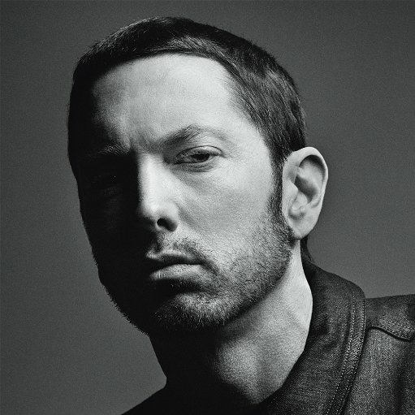

EMINEM
One of the greatest rappers ever!

Marshall Bruce Mathers III (born October 17, 1972), known professionally as Eminem, is an American rapper and record producer. He is credited
with popularizing hip hop in middle America and is critically acclaimed as one of the greatest rappers of all time. Eminem is among the
best-selling music artists of all time, with estimated worldwide sales of over 220 million records.
About Eminem
- His mother nearly died during her 73-hour labor with him.
- Eminem had his first run-in with the law at age 20, when he was arrested for his involvement in a drive-by shooting with a paintball gun. The case was dismissed when the victim did not appear in court.
- Following Eminem's multiplatinum record sales, Interscope offered him his own label; he and Paul Rosenberg founded Shady Records in late 1999.
- He was twice married to Kimberly Anne Scott; he met Scott in high school while he stood on a table with his shirt off rapping LL Cool J's "I'm Bad". Scott and her twin sister Dawn had run away from home; they moved in with Eminem and his mother when he was 15 and he began an on-and-off relationship with Scott in 1989. Mathers and Scott were married in 1999 and divorced in 2001. Their daughter Hailie Jade Scott-Mathers was born on December 25, 1995. Although Eminem told Rolling Stone in 2002, "I would rather have a baby through my penis than get married again", he and Scott briefly remarried in January 2006. He filed for divorce in early April, agreeing to joint custody of Hailie.
- In 1999, Eminem's mother sued him for $10 million, claiming he was slandering her on The Slim Shady LP. Litigation concluded in 2001, resulting in an award of $1,600 for her damages. On June 3, 2000, Eminem was arrested during an altercation with Douglas Dail at a car-audio store in Royal Oak, Michigan, when he pulled out an unloaded gun and pointed it at the ground. The next day, in Warren, Michigan, he was arrested again for assaulting John Guerra in the parking lot of the Hot Rock Caf� when he saw him kissing his wife. Eminem recreated the Guerra assault in "The Kiss (Skit)" on The Eminem Show. He pleaded guilty to possession of a concealed weapon and assault, receiving two years' probation; however, Guerra's assault charge was dropped as part of the plea agreement. On July 7, 2000, Kim attempted suicide by slashing her wrists, later suing Eminem for defamation after describing her violent death in "Kim".
- Sanitation worker DeAngelo Bailey sued Eminem for $1 million in 2001, accusing him of invading his privacy by publicizing information placing him in a false light in "Brain Damage", a song that portrays him as a violent school bully. Although Bailey admitted picking on Eminem in school, he said he merely "bumped" him and gave him a "little shove". The lawsuit was dismissed on October 20, 2003; Judge Deborah Servitto, who wrote a portion of her opinion in rap-like rhyming verse, ruled that it was clear to the public that the lyrics were exaggerated.
- He was the best-selling music artist in the United States of the 2000s and the best-selling male music artist in the United States of the 2010s, third overall. Billboard named him the "Artist of the Decade (2000�2009)". He has had ten number-one albums on the Billboard 200�which all consecutively debuted at number one on the chart, making him the first artist to achieve this �and five number-one singles on the Billboard Hot 100. The Marshall Mathers LP, The Eminem Show, Curtain Call: The Hits (2005), "Lose Yourself", "Love the Way You Lie" and "Not Afraid" have all been certified Diamond or higher by the Recording Industry Association of America (RIAA). Rolling Stone has included him in its lists of the 100 Greatest Artists of All Time and the 100 Greatest Songwriters of All Time. He has won numerous awards, including 15 Grammy Awards, eight American Music Awards, 17 Billboard Music Awards, an Academy Award, a Primetime Emmy Award and an MTV Europe Music Global Icon Award. In 2022, Eminem was inducted into the Rock and Roll Hall of Fame.
The above information were gotten from Wikipedia. For more,
click here to check out the page